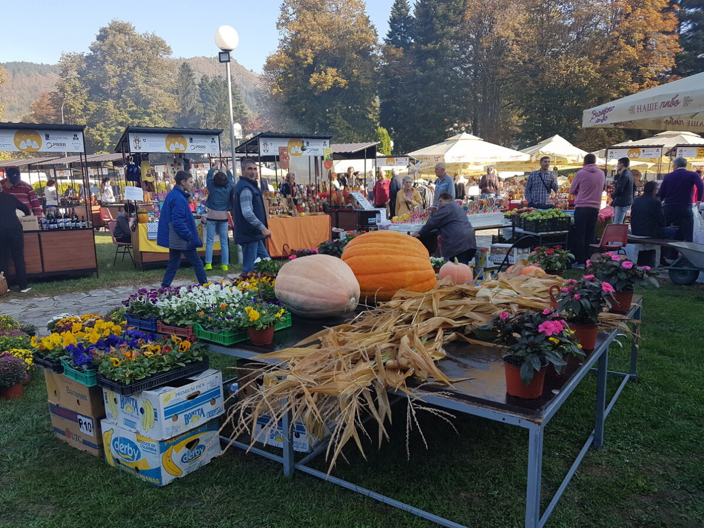

Plodovi Rađevine
☰
Manifestacija "Plodovi Rađevine" prvi put je uspešno organizovana 2013. godine u Krupnju. Njen primarni cilj od samog početka jeste očuvanje bogate tradicije, promocija malih poljoprivrednih gazdinstava, kao i snažan podsticaj razvoju manifestacionog i seoskog turizma u ovom prelepom delu zapadne Srbije.
Kako stara i mudra krilatica ovog naroda kaže: "Rađevina je da rađa, a Krupanj da bude krupno!" Upravo se to svake jeseni iznova dokazuje na platou ispred Biblioteke „Politika“, gde lokalni domaćini ponosno izlažu plodove svog celogodišnjeg truda i rada na zemlji koja je ekološki čista, zdrava i plodna.
Organizovana od strane Turističko-sportske organizacije opštine Krupanj i pod pokroviteljstvom lokalne samouprave, ova izložba je odavno prerasla lokalne okvire. Danas ona predstavlja višednevni spektakl tradicije, privrede, kulture i narodnog stvaralaštva koji privlači na hiljade posetilaca spremnih da osete autentičan duh i čuveno gostoprimstvo Rađevaca.

Detaljnu satnicu, spisak izlagača i raspored takmičenja možete pogledati u zvaničnom dokumentu:
Preuzmi PDF program rada